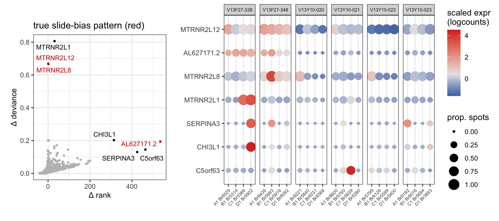

length(unique(spe$brain))[1] 24length(unique(spe$sample_id))[1] 24Having established the ability of the approach with a sample dataset, we now switch gears to look at our own data (MBv dataset).
Our 10X Visium RNAseq dataset was generated from a single sequencing run and contains 24 human DLPFC samples. This is the first portion of a final dataset that will contain 120 samples, so with this subset it is imperative that we learn how to optimize our analysis pipeline.
Each of the 24 samples was collected from a single brain donor/ subject.
length(unique(spe$brain))[1] 24length(unique(spe$sample_id))[1] 24The samples are organized 4 per slide (6 total slides) with 2 male and 2 female samples per slide.
slide
sex V13F27-338 V13F27-348 V13Y10-020 V13Y10-021 V13Y10-022 V13Y10-023
F 2 2 2 2 2 2
M 2 2 2 2 2 2The first batch effect we sought to investigate in the MBv dataset is batch= slide.
The goal of this analysis is to perform feature-based QC to remove features contributing to non-spatially meaningful biological variation from our list of spatially variable genes (SVGs).
As we showed in the background chapter, using nnSVG for feature selection in the MBv data produced a list of features that represent the spectrum of layer-specific markers in the DLPFC (Figure 1.3). We then demonstrated with the spatialLIBD dataset that SVGs were highly ranked by scry::devianceFeatureSelection.
When we performed the binomial deviance models on the MBv dataset (all features, n=36601), we found that the SVGs were even more highly ranked after inclusion of a batch= slide.
Summary of SVG rank: Min. 1st Qu. Median Mean 3rd Qu. Max.
2.0 537.2 1074.5 1103.5 1633.5 2929.0 Summary of SVG rank (batch= slide): Min. 1st Qu. Median Mean 3rd Qu. Max.
1.0 537.2 1073.5 1104.2 1632.8 3151.0 Given the high rank of SVGs in the binomial deviance models and the substantial processing time required to run the model on all features, we decided to run devianceFeatureSelection on only the SVGs.
#read in the results of both models
slide.df = read.csv("processed-data/bindev_default-slide_svgs-only.csv")Figure 3.1 Results of binomial deviance model performed on SVGs only (n= 2098 features)

To isolate the influence of batch= slide we calculated the relative change in deviance and the difference in rank as established with the spatialLIBD dataset.
#care about loss of deviance
slide.df$d.diff = (slide.df$dev_default-slide.df$dev_slide)/slide.df$dev_slide
# care about increase in rank
slide.df$r.diff = slide.df$rank_slide-slide.df$rank_defaultThese calculations distinguish several SVGs as potentially biased but altogether exhibited smaller magnitude changes compared to the subject effect in the spatialLIBD data (Figure 2.4).
Figure 3.2 Difference in deviance and rank distinguish outliers (n= 2098)

Even though the influence of batch= slide was more subtle than expected from the spatialLIBD data, our difference metrics still clealy distinguished a small number of potentially biased SVGs.
biased.genes = filter(slide.df, r.diff>300 | d.diff>.5)$gene
names(biased.genes) = rowData(spe)[biased.genes,"gene_name"]We found that of the seven total potentially slide-biased genes, only 2-3 (MTRNR2L12, AL627171.2, and maybe MTRNR2L8) displayed expression patterns indicative of slide-specific influence. For the remaining features (MTRNR2L1, SERPINA3, CHI3L1, C5orf63), although the average slide expression may indicate a slide batch effect, the dotplot suggests that individual samples drive these differences.
Figure 3.3 Summary of potentially slide-biased genes

To support the influence of slide on the expression of these potentially biased genes we looking at the unscaled logcount expression for each sample, reconstructing the initial 2D coordinates.
These plots confirm the conclusions from the dotplot that MTRNR2L12 and AL627171.2 exhibit slide-biased expression with increased abundance in the first two slides. For these figures each row corresponds to a single slide, and the tissue samples are displayed in the order they are positioned on the slide.
Figure 3.4 Identification two slide-biased SVGs in the MBv dataset

However, MTRNR2L8 clearly is most influenced by sample-specific variation rather than slide.
Figure 3.5 MTRNR2L8 expression is augmented in a single subject

As we established with the spatialLIBD example, there can be subject-specific expression patterns that have the potential to confound spatial domain clustering (Figure 2.6, Figure 2.8). Our experimental design includes only one sample per subject, such that no two samples came from the same brain donor. Thus, any batch effect of subject and sample are indistinguishable.
The concern with examining sample-specific variation in gene expression within our dataset (and potentially any SRT dataset) is that the proportion of observations corresponding to the different spatial domains varies across samples. Despite considerable efforts to collect tissue sections that are representative of all DLPFC layers, there are between-sample (aka between-subject) differences in tissue composition.
We used the original raw SVG clusters (K=7; Figure 1.1) as a rough guide to see how tissue composition changed across samples. We combined the two L1 clusters and removed the L5/6 cluster since the merging of two layers might skew some samples more than others. We can see that Br5902 has a substantially higher proportion of WM spots than the other samples.
Figure 3.6 Most domains are evenly distributed across subjects, with one exception in WM

Our approach to identifying biased genes would be problematic/ ineffective if applying a batch= subject effect to the binomial deviance model identified key layer markers as subject-biased. Notably, the subject with an uncommonly high number of WM spots (Br5902) is also the subject that appears to contribute to the identification of MTRNR2L1, SERPINA3, and CHI3L1 as subject/sample-biased (Figure 3.3).
To see if WM spots were likely to drive the bias in these 3 features, we compared the expression of known WM markers across rough spatial domains to the expression of MTRNR2L1, SERPINA3, and CHI3L1. If the potentially Br5902-biased features exhibited similar expression patterns across spatial domains as the known WM markers, then it is possible that tissue composition is responsible for the identification of these features as potentially biased.
Figure 3.7 Expression of MTRNR2L1, SERPINA3, and CHI3L1 does not indicate an influence of tissue composition

We observed that unlike standard WM markers (left), the expression of MTRNR2L1, SERPINA3, and CHI3L1 expression are relatively equal across different spatial domains (right), both for the apparent outlier Br5902 and in other slides/samples. This suggests that our approach to identifying biased features is not sensitive to differences in tissue composition.
To confirm this, we again visualized the unscaled logcounts, juxtaposing MBP expression (denoting WM) with the potentially subject-biased genes. We display only the first two slides for ease of comparison.
Figure 3.8 Confirmation that WM spots do not drive subject-bias of MTRNR2L1, SERPINA3, and CHI3L1

We conclude that none of the potentially subject-biased genes flagged by the addition of batch= slide reflect meaningful differences in tissue composition.
It is important to note that the 5 potentially subject-biased SVGs identified here were flagged when considering the influence of batch= slide. Next we will explore the impact of batch= subject, checking for a potential influence of tissue composition before proceeding.